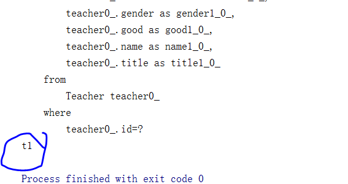

第二十六课. CoreAPI-Configuration-SessionFactory-GetCurrentSession-OpenSession
我们做一个小实验，我们将hibernate.cfg.xml名字改成hibernate.xml，我们运行一下我们的测试程序，测试代码是(com.bjsxt.hibernate.HibernateCoreAPITest.java)：
发现报错：
如果我们在beforeClass方法内对；配置进行修改：
那么这个时候就会对修改过名字后的配置文件进行识别，程序可以正常运行。
结论：
我们可以在configure方法中指定hibernate配置文件
我们看上面testTeacherSave()代码中关于Session的部分：
SessionFactory是用来产生和管理Session的。通常情况下每个应用只需要一个SessionFactory，除非要访问多个数据库的情况。
我们需要关注两个方法，一个是openSession，另外一个是getCurrentSession，我们通过实验可以来阐述二者的区别：
第一个先做openSession的：
|
|
最后显示结果是false，说明使用openSession方法产生的两个Session是不一样的。而且openSession每次使用结束后需要自己手动close。
再做第二个实验，关于getCurrentSession的：
结果显示是true，说明使用getCurrentSession方法得到的两个Session是相同的。
我们再继续做实验:
发现经过commit之后，session和session3并不相同，即使是在getCurrentSession下得到的。
我们再来剖析一下getCurrentSession的用途，看这样一张架构图：
在添加一个用户的时候，会发生两个操作，一个是向数据库中加入一个用户记录，另外一个就是在日志中添加一个记录。这两个应该同时处于同一个事物之中，这时候如果用openSession就不太合适了，因为是不同的Session，为了保证两个操作在同一个Session中，我们应该使用getCurrentSession方法。
第二十七课. CoreAPI JTA简介
我们在前面讲的，getCurrentsession建立Session会从上下文找，如果有，用旧的，如果没有，建新的，那么这个上下文是怎么配置的？
上下文可以在hibernate.cfg.xml中进行配置：
current_session_context_class有四个选项可以配置：
jta、thread、managed、custom.Class
其中jta、thread常用，managed、custom.Class少用
thread是使用connection 单数据库连接管理事务
jta （全称java transaction api），是java分布式事务管理（多数据库访问）
要理解jta，看下面的架构图：
jta需要操作多个数据库，比如在订单系统中，当下了一个订单之后，向DB1存取产品信息，向DB2存取财务方面的信息。这两个信息一块从属于一个事物，如果这时候在使用单连接，是解决不了问题的。这时候就用到了jta。jta由中间件提供（jboss WebLogic等，tomcat不支持）
总结一下上面讲到的关于SessionFactory的知识点：
SessoinFactory
a) 用来产生和管理Session
b) 通常情况下每个应用只需要一个SessionFactory
c) 除非要访问多个数据库的情况
d) 关注两个方法即：openSession getCurrentsession
i. openSession每次都是新的，需要close
ii. getCurrentsession从上下文找，如果有，用旧的，如果没有，建新的
- 用途：界定事务边界
- 事务提交自动close
- 上下文配置可参见xml文件中
<property name="current_session_context_classs">thread</property> - current_session_context_class (jta、thread常用 managed、custom.Class少用)
a) thread 使用connection 单数据库连接管理事务
b）jta （全称java transaction api）-java分布式事务管理（多数据库访问）
jta由中间件提供（jboss WebLogic等，tomcat不支持）
第二十八课. CoreAPI对象三种状态
openSession和getCurrenSession不能混用。由于Session是一个接口，但是openSession得到的Session和getCurrenSession得到的Session的具体实现是不一样的。
先写个小测试程序来测试一下：
在这之前需要先drop掉我们的teacher表。
运行一下，看到打印出的id是1
hibernate有三种对象状态，它们之间的关系如下：
- 三种状态的区分关键在于
a) 有没有ID
b) ID在数据库中有没有
c) 在内存中有没有（session缓存） - 三种状态：
a) transient：内存中一个对象，没ID,缓存中也没有
b) persistent：内存中有，缓存中有，数据库有（ID)
c) detached：内存有，缓存没有，数据库有，有ID
第二十九课. CoreAPI Delete
写一个代码测试一下：
运行一下：
这个代码首先创建了一个Teacher对象，这时处于Transient状态，然后通过save方法存储这个对象，进入到Persistent状态。然后commit，就进入另外一个session，这时候用getCurrentSession函数获取到这个session，由于它有id，所以通过delete方法就可以将这个对象从数据库删除。
再做第二个实验：
这个实验中，我们只创建了一个对象，这时进入了Transient状态，这时没有将对象存入数据库。这时候我们对其设置id号，然后delete这个对象，运行一下：
发现还是可以delete掉的。
第三十课. CoreAPI Get Load
我们先学习怎么从数据库中取出一条数据并转化成一个对象：
运行一下：
发现成功将id号为1的对象从数据库中取了出来并且将它的名字打印在了控台上面。
再看session的Get方法：
运行一下：
发现session的get和load都可以取到一个数据库中的对象，并将这个对象的名字打印出来。
但实际上，这两个方法有着重要的区别：
先看get方法，如果我们将打印名字的语句放在commit之后：
运行一下：

发现没有任何问题。
但是同样的，我们再来试一下load方法：
运行一下：
发现会报错，这个错误叫做LazyInitializationException，而且说我们没有session。这个原因我们可以做个试验来讲明。
将testLoad修改，去掉那个打印名字的句子：
运行一下：
发现没有生成任何sql语句。
我们同样的，去掉testGet中的打印名字语句：
运行一下：
OK，这下我们就明白了，原来get方法只要生成一个对象，就会产生sql语句，但是load方法不是，它是在用到这个对象的时候，才开始生成sql语句。
如果我们load一个不存在的记录，比如id为5的对象，不会报错，因为这时候对象没有被调用，所以不会发出sql语句；但是get就不行了，只要创建这个对象，就会生成sql语句，所以它会到数据库查，一查没有这个记录，所以会报错。
所以get和load的区别如下：
- 不存在对应记录时表现不一样
- load返回的是代理对象，等到真正用到对象的内容时才发出sql语句
- get直接从数据库加载，不会延迟
第三十一课. CoreAPI Get Load 2
还是关于刚刚的get和load的区别，其实load返回的是代理对象，get直接从数据库直接加载，我们可以做一个实验，就是打印它们的类型名：
|
|
发现load运行结果：
是一个代理类型
而get运行结果：
就是直接从数据库拿出来的一个Teacher类型的对象。
第三十二课. CoreAPI Update
update：
- 用来更新detached对象，更新完成后转为persistent状态
- 更新transient对象会报错
- 更新自己设定id的transient对象可以（数据库有对应记录）
- persistent状态的对象只要设定（如:t.setName…）不同字段就会发生更新
先看第一个测试例子：
运行一下：
这个例子中，先从数据库中取出来一个id为1的记录，然后通过setName方式改变这个对象的名字，再取出当前的session，执行update操作，发现结果是将这条数据进行修改重新插入到数据库中的。
再看下一个例子：
运行这个例子：
发现0条数据被更新，这是因为在测试代码中，我们没有指定新的Teacher对象t的id号，所以session不知道要去更新哪一条对象数据，所以会报错。
第三个例子代码：
执行一下：
发现这样的transient对象也可以被更新，因为这一次我们设置了对象id，而且在数据库中有这条记录，所以我们可以成功更新这一条对象。
看下一种更新方式：
运行一下：
这一次，我们从数据库中取出一个对象，然后修改这个对象，不执行update操作，只是commit，发现在控制台还是把整个对象中数据进行修改，然后插入到数据库中了。
我们再执行一次：
发现这一次除了取对象，就并没有数据进行修改操作，原因是因为数据在上一次修改之后，并没有再次修改，所以不会再执行一次插入操作。
这时候我们还是觉得麻烦，如果只想修改对象的一个字段，却要整个重新插入，麻烦，怎么可以只set一个字段？
解决办法就是先在getTitle上面加一个Column注解：
|
|
修改一下update4，要它修改的名字变一下，变成原来对象没有的：
再执行：
发现set了所有字段，成功！
这种方式虽然可以达到目的，但是不常用。
我们介绍下一种方法，先修改Student.hbm.xml：
在class后面加上了dynamic-update=”true”这个选项。
查询一下数据库中表Student：
发现有一条数据，现在我们就修改这一条数据：
运行一下：
发现这个操作之后，数据只set了要被修改的字段，很棒！
如果去掉dynamic-update=”true”这个配置，修改例子中的名字，再执行：
发现又把所有字段都更新了。
再做一个关于跨session的实验：
我们运行一下：
如果我们再改成dynamic-update=”true”，第一个setName改一下，运行：
发现第一次我们运行的时候，由于设置了动态更新，所以把数据库中对象取出来以后，只是set要修改的字段，就结束。
commit以后，session已经变成了一个新的session，这时候我们的对象没有在session中找到自己原来的对象，所以没有比对，不能直接set一个字段，所以就把所有字段再set一遍，插入数据库。
第六种update方式：
跨session以后，我们使用merge方法，来更新要修改的字段。运行结果：
发现一个很好玩的事情，就是在我们进入新的session之后，要merge的时候，会先执行一个查询语句，其实这个查询语句是把我们要修改的对象load到了session中，然后和session中的对象进行比对，如果要修改的字段不同，那么set一个字段就可以。这种方式其实也特别麻烦，因为每次都要先load一下才能set字段。
第七种更新方式：
执行一下：
发现只set了我们要修改的字段，而且不需要load。这种方式叫做HQL，是一种特别类似于JDBC中Statement语句的写法，用SQL语句来操作更新，推荐使用。
总结一下update：
- 用来更新detached对象，更新完成后转为persistent状态
- 更新transient对象会报错
- 更新自己设定id的transient对象可以（数据库有对应记录）
- persistent状态的对象只要设定（如:t.setName…）不同字段就会发生更新
- 更新部分更改的字段
a) xml 设定 property 标签的 update 属性，annotation 设定@Column 的 updatable
属性，不过这种方式很少用，因为不灵活
b) 使用xml中的dynamic-update，JPA1.0 Annotation 没有对应的属性，hibernate 扩
展？
i. 同一个session可以，跨session不行，不过可以用merge()(不重要）
c) 使用 HQL(EjBQL)(建议）
第三十三课. CoreAPI-saveOrUpdate-Clear-Flush
saveOrUpdate方法：
我们先把Teacher类中的
@Column(updatable = false)
这一句去掉。
编写测试函数：
运行一下：
发现在新创一个对象以后，如果调用saveOrUpdate方法，那么会执行save操作；如果是已经有了这样一个对象，只是设置了它的某个字段，那么会执行update操作。
这个方法到此为止，我们看下一个方法。
这个方法叫clear方法，先来看一个例子：
运行一下：
发现第一次会从数据库中取一下这个对象，而第二次没有执行查询语句，原因是因为第一次已经将对象load导入缓存中了，第二次取的对象就是这个对象，所以先从缓冲中去取，而不是从数据库中取。
那么clear是做什么的？
我们再做实验：
运行：
发现执行了两次查询，这时候我们明白了，原来clear是用来清空缓存的。
|
|
执行一下：
发现只是执行了一次update语句，这是因为我们对字段的两次修改都是在commit之前的。所以不管对这个字段修改了多少次，在执行commit之后，只会更新一次。
如果我们想生成多个update操作，怎么做呢？
执行一下：
发现再加入了一个flush语句之后，会执行两条update操作。
所以flush的作用就是强制让缓存的内容和数据库中的内容做同步。
如果将flush改成clear，执行一下：
发现只执行一次查询操作，原因是由于将数据库中对象load到缓存之后，我们就用clear方法把缓存清空了，之后我们再一次setName，只是对一个Transient状态的对象进行操作，那么我们setName之后，不会和数据库打交道，不会立即执行sql语句。
第三十四课. CoreAPI SchemaExport and 总结
先将hibernate.hbm.xml中<property name="hbm2ddl.auto">update</property>
这一句屏蔽掉。
写测试代码：
运行：
发现每一个建表语句都打印了两次。这是由于log4j先打印了一次，然后我们的create语句中第一次参数又将建表的DDL打印了一次。如果改成false，就只会打印一次了。
这个例子的主要作用就在于帮我们建立一个表。